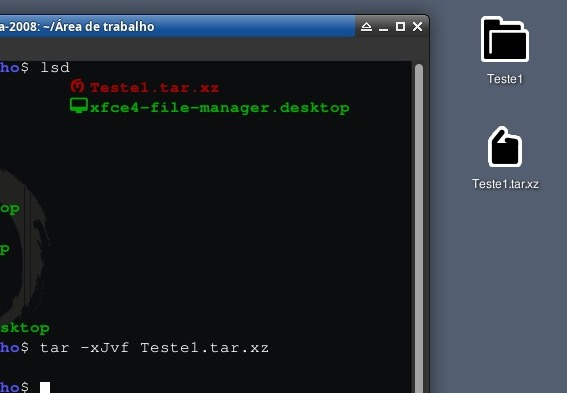

tar.gz:
Bem relaxa que esse também é um pouco complicada até mas agora vou te ensinar utilizando a mesma pasta, o Teste1 e bem as ferramentas
que vamos precisar é do tar e gzip que no caso o tar empacota o arquivo ou pasta e o gzip faz a compressão do .gz
Para instalar ambas as ferramentas use: sudo apt install tar gzip

Bem como pode ver usei o comando: tar -czvf arquivo.tar.gz pasta/
E bem assim foi para compactar, mas o que significa essas 4 letras? Aqui explicação:
c = Criar
z = Usar gzip
v = Modo verbose (No caso irá mostrar arquivos)
f = Nome do arquivo final
E certo compactamos, vamos descompactar?
Na descompactação:

E bem é assim que descompacta e sim eu usei rm -dir -f para apagar aquela pasta para funcionar o comando
e bem o comando foi básicamente assim: tar -xzvf Arquivo.tar.gz
E bem sim o tar é uma ferramenta muito poderosa, você vai ver ela na maioria das vezes agora aqui vai explicação dessas letras:
x = Extrair
z = gzip
v = Verbose
f = Arquivo
tar.bz2
O tar.bz2 é a mesma coisa do tar.gz, mas com algumas diferenças e aqui vou te mostrar, só precisamos da ferramenta: bzip2 que fará
a compreesão (Para instalar use: sudo apt install bzip2) que também será feita com a pasta Teste1 (Nossa cobaia)

Bem como podem ver usei o comando: tar -cjvf arquivo.tar.bz2 arquivo/ para compactar a pasta e aqui vai uma breve explicação sobre
essas letras:
c = Criar
j = Usar bzip2
v = Verbose
f = Arquivo
Agora que sabemos, vamos descompactar.
Na descompactação:

Como podem ver eu utilizei o comando: tar -xjvf arquivo.tar.bz2 para descompactar a pasta com tar.bz2
Explicação das letras no comando:
x = Extrair
j = Usar bzip2
v = Verbose
f = Arquivo
tar.xz:
Ele é a mesma coisa dos outros, só a ferramenta que muda e então vamos precisar de uma ferramenta chamada xz-utils
que irá servir para a compressão que para instalar só usar o comando: sudo apt install xz-utils

Como podem ver eu usei o comando: tar -cJvf arquivo.tar.xz arquivo/
Que bem vocês estão cansados de ver isso mas beleza:
c = Criar
J (Sim "J" maiúsculo) = Usar xz
v = Verbose
f = Arquivo
Para descompactar:

E bem aqui eu usei o comando: tar -xJvf arquivo.tar.xz para descompactar a pasta e bem eu nem preciso explicar de novo
o que é essas letras certo? Porque literalmente é quase tudo a mesma coisa.